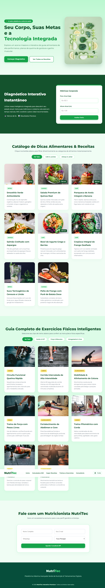
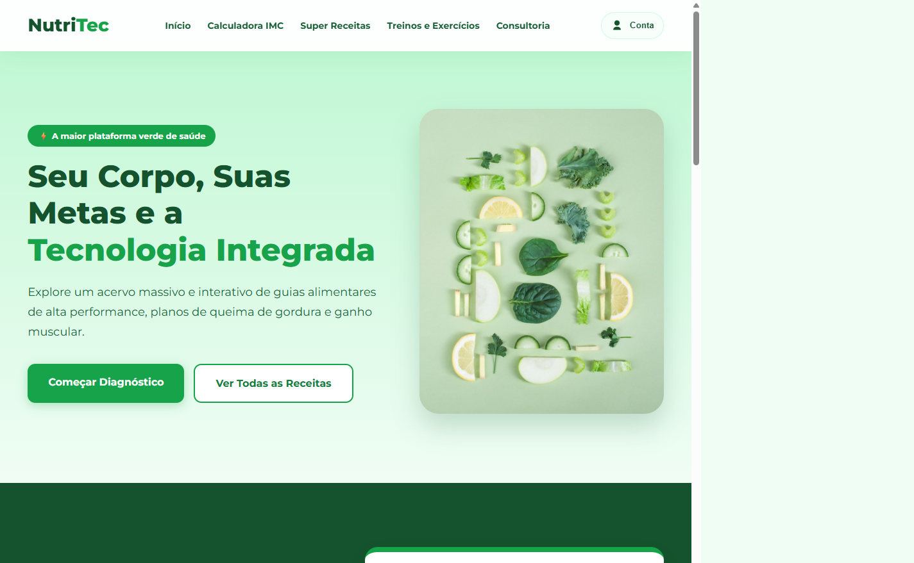
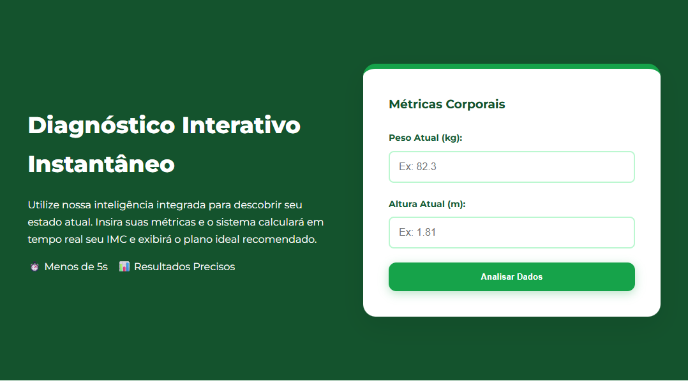
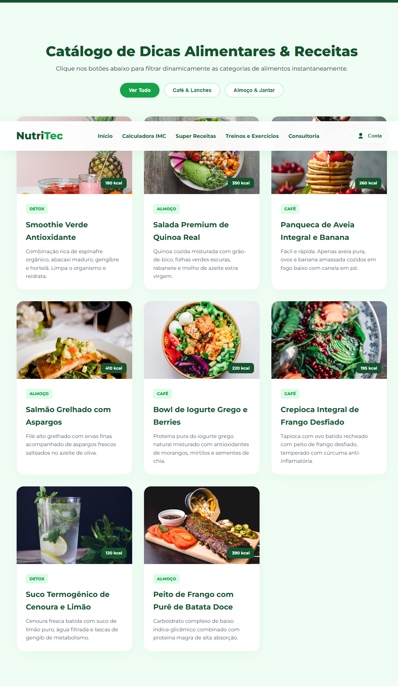
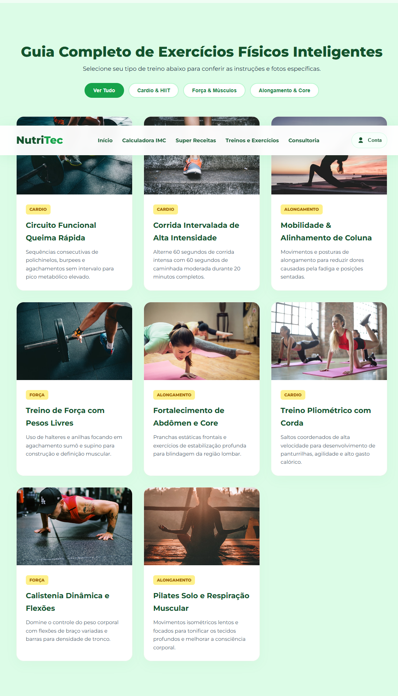
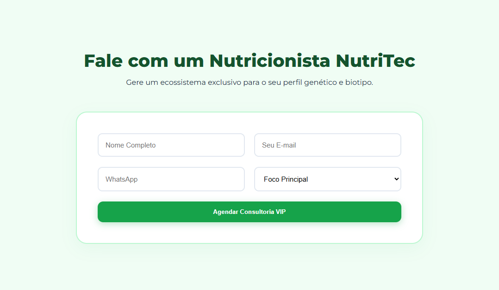
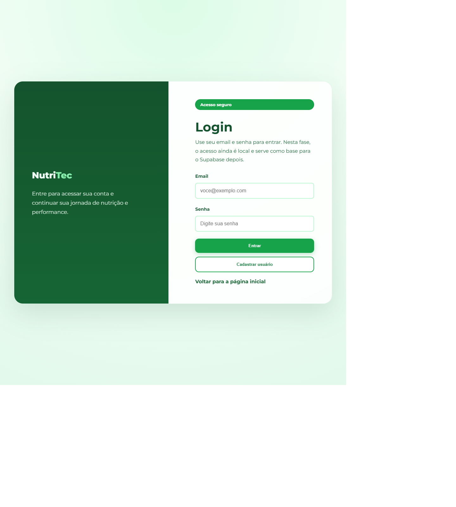

NutriTec
Slides prontos para apresentação com prints reais de cada tela e das principais sessões do sistema.
Use este arquivo como apresentação no navegador ou imprima em PDF.

Header, hero e acesso rápido
Esta seção mostra a primeira dobra da home, com menu superior, destaque de proposta e botões para iniciar o diagnóstico ou navegar no conteúdo.
- Menu de perfil com acesso ao login e ao perfil.
- Hero principal com mensagem da plataforma.
- Ações rápidas para diagnóstico e receitas.

Diagnóstico interativo
Seção usada para entrada de peso e altura, cálculo de IMC e exibição de classificação e sugestão de uso da plataforma.
- Campo de peso e altura.
- Cálculo de IMC no botão Analisar Dados.
- Feedback visual com classificação e sugestão.

Catálogo alimentar com filtros
A área de receitas apresenta cards com imagens, calorias e categorias para filtrar conteúdos por perfil alimentar.
- Filtro por café, almoço e detox.
- Cards com imagem, título e explicação curta.
- Card do Smoothie Verde já com imagem corrigida.

Guia de treinos por objetivo
Nesta parte a tela organiza exercícios em categorias como cardio, força e alongamento, facilitando a apresentação por blocos.
- Filtro por tipo de treino.
- Cards com imagem e descrição técnica.
- Separação visual forte para leitura rápida.

Formulário de contato
Seção final da home para agendamento de consultoria com formulário simples e CTA de conversão.
- Nome, e-mail, WhatsApp e foco principal.
- Botão de agendamento com destaque.
- Boa transição para encerrar a apresentação da home.

Tela de login
Tela dedicada para entrada na conta e cadastro de usuário, mantendo o fluxo separado da página principal.
- Campos de email e senha.
- Botões Entrar e Cadastrar usuário.
- Link para voltar para a página inicial.

Resumo de métricas e edição
Esta é a tela do perfil, onde o usuário visualiza dados corporais, edita informações e acompanha o resumo vinculado à conta.
- Nome/e-mail do usuário logado.
- Botão para cadastrar ou editar dados.
- Cards com peso, altura, IMC e faixa ideal.